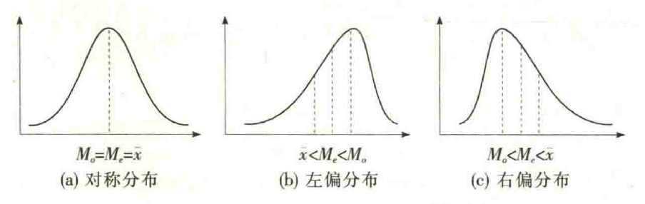
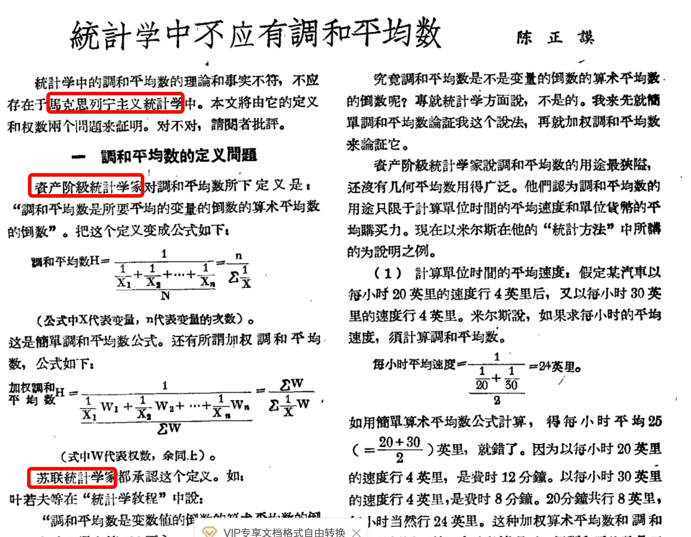

数据的集中位置：众数、中位数和平均数
如果你的老板让你汇报上个季度的销量表现，而他赶着开一个会，让你只用一个指标来概括。那你需要一个合适的数字，反映了上个季度的销量的集中位置，来代替整体水平。
本文，我们就来讲讲，有哪些关键的数值，可以代表整体的水平。
从猪肉价格上涨说起
最近国内猪肉价格飙升，不知道无肉不欢的朋友们可还能撑得住啊，就连小餐馆的炒饼炒肉都涨了好几块钱。。。然而，最近的微博有条热搜，某集团老板曹某旺谈猪肉涨价：应大胆、勇敢的接受涨价，不涨价才不合理！！！！！
具体言辞如下“1978年的猪肉两块多钱一斤，工人的工资才30块钱一个月。现在工资平均要7000块，涨了200倍。而农民养猪，猪肉就按照今天60块来算，也才涨30倍。我们应该大胆的、勇敢的接受这些农副产品涨价。可能涨价是合理的，不涨价才是不合理的”。
听完他的话，你是不是感觉貌似有点道理但又哪里不对的样子，其实这里他就让我们进入到了一个误区“平均”。
在贫富两极化的比较严重的情况下，平均工资根本不能代表普通人工资的水平；而且经济越发达，基本消费品的价格占总收入的比例应该越小才对。所以，下次再看到某媒体拿平均数来说事要谨慎了，我和马云的平均年收入为10亿，能说我年赚5亿吗，我倒是想呢。
这里出现了第一个知识点：平均数容易受异常数值影响，有时不能表现一组数据真实水平。
既然平均数不能表示真实工资水平，那么什么指标能表示工资水平呢？咱们本期谈谈代表数据集中数值的三个数：众数、中位数、平均数。
众数、中位数和平均数
上文讲到，针对数值型数据，我们可以进行分类统计、数据排序、数值计算三个层级的操作。
- 根据分组统计，我们可以得到众数
- 根据数据排序，我们可以得到中位数
- 根据数值计算，我们可以得到平均数
众数、中位数和平均数是集中趋势的三个主要测度值，它们具有不同的特点和应用场合。掌握它们的特点，有助于在实际应用中选择合理的测度值来描述数据的集中趋势。
众数众数是一组数据分布的峰值，不受数据极端值的影响。比如，B站刚创办时的用户主要是二次元爱好者，这说的就是众数。众数的缺点是具有不唯一性，一组数据可能有一个众数，也可能有两个或多个众数，也可能没有众数。众数只有在数据量较多时才有意义，当数据量较少时，不宜使用众数。众数适合作为分类数据的集中趋势测度值。
中位数是一组数据中间位置上的值，不受数据极端值的影响。举个栗子，房间里有5人，收入分别为「10万,11万,12万,13万」，此时的中位数为11.5万。即使此时马云加入，「10万,11万,12万,13万，马云」,中位数变为12万，仍然可以反映真实水平。当一组数据的分布偏斜程度较大时，使用中位数也许是一个好的选择。中位数适合作为顺序数据的集中趋势测度值。
平均数是针对数值型数据计算的，而且利用了全部数据信息，它是应用最广泛的集中趋势测度值。当数据呈对称分布或接近对称分布时，三个代表值相等或接近相等，这时则应选择平均数作为集中趋势的代表值。但平均数的主要缺点是易受数据极端值的影响，对于偏态分布的数据，平均数的代表性较差。因此，当数据为偏态分布，特别是偏斜程度较大时，可以考虑选择中位数或众数，这时它们的代表性要比平均数好。
从分布的角度看，众数始终是一组数据分布的最高峰值，中位数是处于一组数据中间位置上的值，而平均数则是全部数据的算术平均。因此，对于具有单峰分布的大多数数据而言，众数、中位数和平均数之间具有以下关系：
- 如果数据的分布是对称的，众数、中位数和平均数必定相等;
- 如果数据是左偏分布，说明数据存在极小值，必然拉动平均数向极小值一方靠，而众数和中位数由于是位置代表值，不受极值的影响，因此三者之间的关系表现为：平均数<中位数<众数；
- 如果数据是右偏分布，说明数据存在极大值，必然拉动平均数向极大值一方靠，因此，众数<中位数＜平均数。
上述关系如图所示：

“平均数有三种算法”
虽然平均数有缺点，但平均数在统计学中具有极其重要的地位，是集中趋势的最主要的测度值。所以我们要重点讲一下平均数。关键的是，平均数的计算方法。
有同学就要问了，平均数怎么算初中就已经学过了，还用的着教么？
哼，孔乙己说:“回字有四样写法”，老乔说：“平均数有三种算法”。在统计学中，根据所掌握数据的不同，平均数有不同的计算形式和计算公式，分别为：简单平均数、加权平均数、几何平均数。
这里有两点，咱扯远些。
首先，孔乙己的说法不对。
回字其实只有三种写法，即：回、囘、囬。这里是鲁迅先生描画孔乙己迂腐形象的神来之笔，说明孔乙己醉心于钻研无用的知识，自以为博学，其实是错误的。
其次，老乔的说法也不对。
数学世界里，除了上述三种，还有一种“调和平均数（harmonic mean）”。在数学中调和平均数与算术平均数都是独立的自成体系的。计算结果两者不相同且前者恒小于等于后者。因而数学调和平均数定义为：数值倒数的平均数的倒数。
但统计和数学不同，统计学中，统计加权调和平均数是加权算术平均数的变形，附属于算术平均数，不能单独成立体系。它主要是用来解决在无法掌握总体单位数（频数）的情况下，只有每组的变量值和相应的标志总量，而需要求得平均数的情况下使用的一种数据方法，公式：n/(1/A1+1/A2+...+1/An)。其计算结果与加权算术平均数完全相等。
没听懂没关系，为了这事，行业里也有学者专门研究这问题：
- 陈正谟. 统计学中不应有调和平均数[J]. 统计工作, 1957(7).
- 常乐. 论取消调和平均数[J]. 贵州财经学院学报, 1996.
- 姜长文. 关于取消"调和平均数"统计概念的论证分析[J]. 金融理论与教学, 2007(第2期):51-53.
咱截图看看其中一篇的文风，很有那个时代的特色。老乔我是文科生，对这个瞬间勾起无数上学时的知识回忆。

好啦，还是回正题，咱讲统计学的平均数三种算法：简单平均数、加权平均数、几何平均数。
简单平均数
根据未经分组数据计算的平均数称为简单平均数(simple mean)。
设一组样本数据为x1,x2...xn,样本量为n,简单样本平均数用$\bar{x}$表示，计算公式为：
我们可以利用Excel中的AVERAGE函数可以计算一组数值型数据的平均数。
加权平均数
根据分组数据计算的平均数称为加权平均数(weighted mean)。
设原始数据被分成k组，各组的组中值分别用M1,M2,…，Mk表示，各组变量值出现的频数分别用f1,f2,…，fk表示，则样本加权平均数的计算公式为：
要注意，这里其实是用各组中值代表各组的实际数据。如果各组数据在组内是均匀分布的，那计算的结果是比较准确的，否则误差就会较大。
几何平均数
几何平均数(geometric mean)是n个变量值乘积的n次方根，用G表示。计算公式为：
- 当数据中出现零值或负值时、不宜计算几何平均数。
- 利用Excel中的GEOMEAN函数可以计算—组数值型数据的几何平均数。
几何平均数是适用于特殊数据的一种平均数，它主要用于计算平均比率。当所掌握的变量值本身是比率形式时，采用几何平均法计算平均比率更为合理。在实际应用中，几何平均数主要用于计算现象的平均增长率。
一位投资者持有一种股票。连续4年的收益率分别为4.5%,2.1%,25.5%,1.9%。要求计算该投资者在这4年内的平均收益率。
平均收益率，几何平均数为8.0787%；平均收益为13644.57(元) 平均收益率，算数平均数为8.5%；平均收益为13858.59(元)
两者相差214.02元，而这部分收益投资者没有获得。这说明，对于比率数据的平均采用几何平均要比算术平均更合理。
并且，当所平均的各比率数值差别不大时，算术平均和几何平均的结果相差不大；如果各比率的数值相差较大时，二者的差别就更加明显。
谨慎对待数字
还有讲一个故事，关于如何选择集中数字：
2010年至2013年间，美国家庭的平均工资从8.4万美元增加到超过8.7万美元，增长了4%。 但并不是每个人都在欢呼，年内收入中位数下降了5%，家庭收入中位数从4.9万美元下降到略高于4.65万美元。
那些不道德的政客，口口声声说“平均收入在增长”———人民大众切切实时的感受着收入的下降。平均收入增长的同时，收入中位数下降。这是金融危机后的真实情况。因为家庭在收入分配上不平等，部分人赚了更多的钱，而其他许多家庭的收入却减少了。
这指向了关于统计学一个非常重要的问题，在这个系列中一次又一次强调的，统计数字是会“说谎”的。统计学除了学习知识本身，更重要的一个重要部分是理解。统计数字可以帮助我们做决定，但我们用我们的常识谨慎的接纳这些数字。
总结
参考文献：
- 孙静娟主编.《统计学》.清华大学出版社.2015：18-20.
- 袁卫,刘超.《统计学--思想、方法与应用》(第二版).中国人民大学出版社.2011.
- 贾俊平,何晓群,金勇进.《统计学》(第七版).中国人民大学出版社.2018.
- 陈正谟. 统计学中不应有调和平均数[J]. 统计工作, 1957(7).